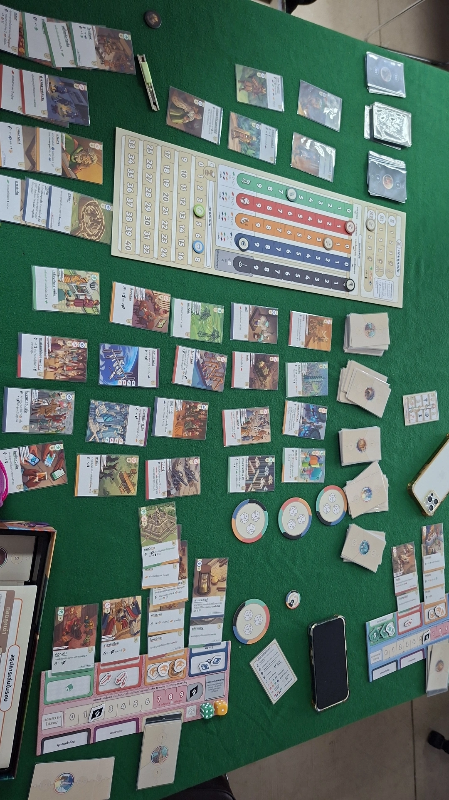
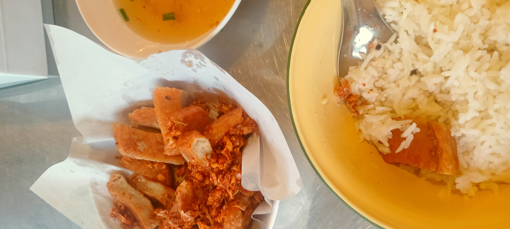
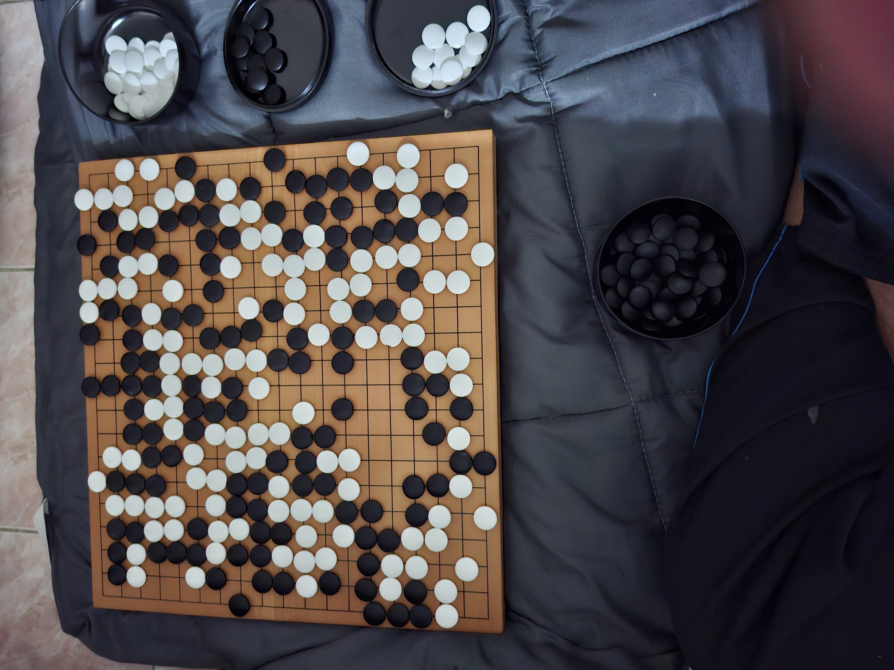
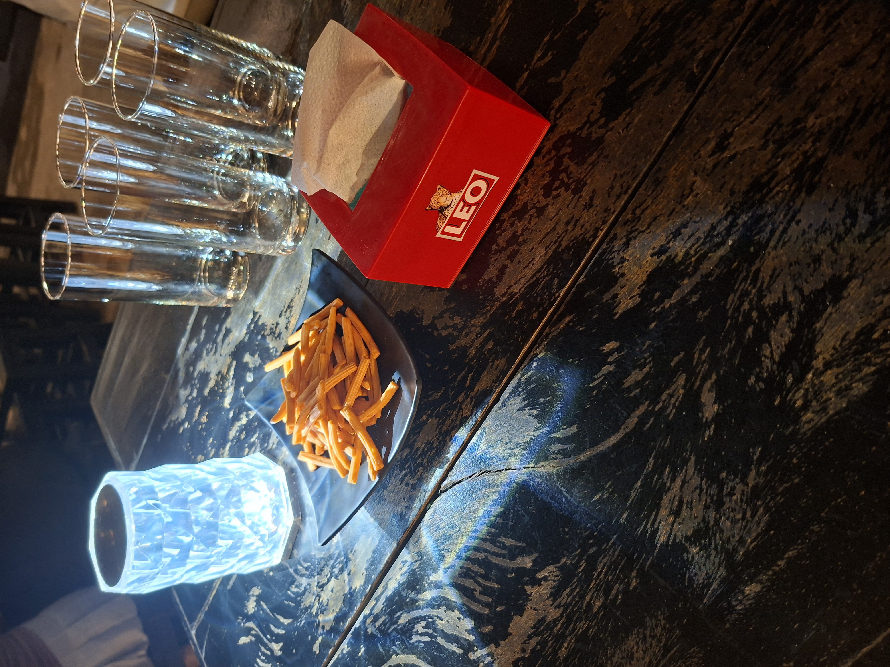

<section id="gallery" class="page-content">
    <div class="bg-white p-6 sm:p-8 rounded-xl shadow-lg">
        <h1 class="text-3xl font-bold text-blue-800 mb-6 text-center">แกลเลอรี่รูปภาพ</h1>
        
        <!-- คอนเทนเนอร์สำหรับรูปภาพในแกลเลอรี่ ใช้ flexbox สำหรับการจัดวางแบบ responsive -->
        <div class="flex flex-wrap justify-center gap-6">
            <!-- รายการแกลเลอรี่ 1 -->
            <!-- แต่ละ card จะมีขนาดเต็มความกว้างบนมือถือ, ครึ่งหนึ่งบน sm, หนึ่งในสามบน md, หนึ่งในสี่บน lg -->
            <div class="w-full sm:w-1/2 md:w-1/3 lg:w-1/4 bg-gray-50 rounded-lg shadow-md overflow-hidden transform transition-transform hover:scale-105">
                <!-- รูปภาพจาก placeholder.co สามารถเปลี่ยนเป็นรูปภาพของคุณได้ -->
                
                <div class="p-4">
                    <h2 class="text-xl font-semibold text-gray-800">บอร์ดเกม</h2>
                    <p class="text-sm text-gray-600 mt-2">ภาพการเล่นบอร์เกมกับเพื่อนๆและน้องๆ</p>
                </div>
            </div>

            <!-- รายการแกลเลอรี่ 2 -->
            <div class="w-full sm:w-1/2 md:w-1/3 lg:w-1/4 bg-gray-50 rounded-lg shadow-md overflow-hidden transform transition-transform hover:scale-105">
                
                <div class="p-4">
                    <h2 class="text-xl font-semibold text-gray-800">อาหารจานโปรด</h2>
                    <p class="text-sm text-gray-600 mt-2">ภาพอาหารที่ดูดีที่สุดในเครื่อง</p>
                </div>
            </div>

            <!-- รายการแกลเลอรี่ 3 -->
            <div class="w-full sm:w-1/2 md:w-1/3 lg:w-1/4 bg-gray-50 rounded-lg shadow-md overflow-hidden transform transition-transform hover:scale-105">
                
                <div class="p-4">
                    <h2 class="text-xl font-semibold text-gray-800">งานอดิเรกของฉัน</h2>
                    <p class="text-sm text-gray-600 mt-2">ภาพที่ฉันไปนั่งเล่นหมากล้อมที่ห้องเพื่อน</p>
                </div>
            </div>

            <!-- รายการแกลเลอรี่ 4 -->
            <div class="w-full sm:w-1/2 md:w-1/3 lg:w-1/4 bg-gray-50 rounded-lg shadow-md overflow-hidden transform transition-transform hover:scale-105">
                
                <div class="p-4">
                    <h2 class="text-xl font-semibold text-gray-800">ท้องฟ้าสีฟ้าที่สวยงาม</h2>
                    <p class="text-sm text-gray-600 mt-2">ถ่ายตอนที่ไปเที่ยวเมญ่าตอนนั้นฉันชอบถ่ายภาพที่ติดสีฟ้าๆ</p>
                </div>
            </div>

            <!-- รายการแกลเลอรี่ 5 เพิ่มเติม -->
            <div class="w-full sm:w-1/2 md:w-1/3 lg:w-1/4 bg-gray-50 rounded-lg shadow-md overflow-hidden transform transition-transform hover:scale-105">
                
                <div class="p-4">
                    <h2 class="text-xl font-semibold text-gray-800">ชีวิตโดนลากไปดื่ม</h2>
                    <p class="text-sm text-gray-600 mt-2">ภาพบรรยากาศตอนที่เพื่อนลากฉันไปดื่ม</p>
                </div>
            </div>
        </div>
    </div>
</section>
